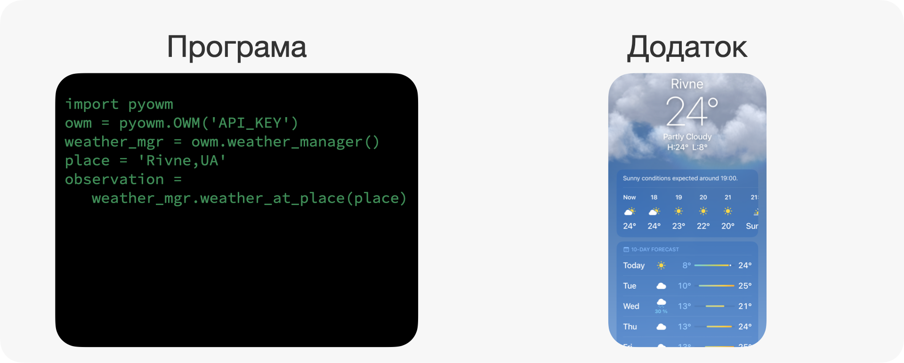
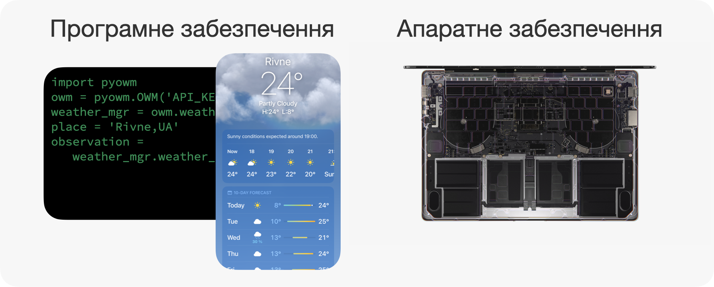
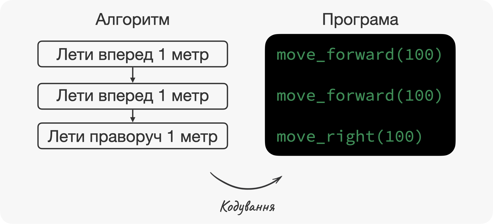

Глава 1 Основні поняття в програмуванні
⏱️ Час на опанування теми: 10 хвилин
🤷 Для чого ми це вивчаємо:
- вміти пояснювати що саме ви робите і яка ваша кінечна мета
- розрізняти близькі по значенню терміни
- вільно спілкуватись з розробниками на одній мові
🔑 Результати навчання:
- дати визначення що таке програма, додаток та програмне забезпечення
- пояснити що таке алгоритм, кодування та програмування, і як ці терміни пов’язані між собою
Ми почнемо з дуже простих термінів, які ми постійно використовуємо у повсякденному житті. Але ми не завжди розуміємо що саме вони означають. Ви певно чули та використовували вже ці слова на інтуїтивному рівні. Зараз прийшов час окреслити їх значення більш формально.
1.1 📲 Розбираємось що таке програма, додаток, програмне забезпечення та код
Почнімо з програм🇬🇧 program. Скоріш за все, перше що ви робите після того, як прокинулись – перевіряєте додатки🇬🇧 apps на ваших телефонах: нові повідомлення в Telegram, прогноз погоди в Weather, пости в Instagram. Й не дивлячись на те, що в повсякденному житті ми називаємо Telegram, Weather та Instagram додатками, у своїй суті вони залишаються програмами.
Давайте з’ясуємо що саме ми маємо на увазі, коли використовуємо слово програма. Якщо ви зазирнете в Вікіпедію, то ви знайдете щось на кшталт “програма – це набір інструкцій для комп’ютера які приводять його у дію для досягнення певної мети”. Але це все одно, що сказати що трава зелена 🌱: визначення точне, але не дуже корисне для розуміння.
Щоб швидесенько зрозуміти це визначення, ми розіб’ємо його на дві частини та розберемось спочатку з останньою 🙃. “Для досягнення певної мети”, ми можемо інтерпретувати як “для того, щоб щось зробити”. Наприклад, додаток Weather дозволяє вам подивитись прогноз погоди в будь-якій точці світу 🌎 у будь-який час. Це і є мета. А у калькулятора мета – швидко підрахувати суму, різницю, добуток або частку.
Перша частина більш не зрозуміла: “набір інструкцій для комп’ютера”. Але тут все просто: “набір інструкцій” – це те, що комп’ютер повинен зробити. Але головне тут те, що комп’ютер повинен розуміти що саме він повинен зробити. Якщо ви будете кричати на електрочайник, щоб він закип’ятив воду, то навряд чи він це зробить. А ось якщо ви натиснете кнопку, то ви зможете зробити собі чай ☕. Так само комп’ютер повинен розуміти наші інструкції або команди. Вони зазвичай написані спеціальною мовою, яка виглядає як дуже дивна англійська – мова програмування🇬🇧 programming language. Комп’ютери розуміють мову програмування. Команди написані цією мовою називаться кодом🇬🇧 code.
До речі, коли ми кажемо комп’ютер, ми не завжди маємо на увазі саме комп’ютер в повсякденному значенні 🖥️. Ви навіть можете іноді почути замість комп’ютера олд-скульне поняття машина🇬🇧 machine, що є скороченням від електронно-обчислювальної машини. Наші смартфони, планшети, ігрові консолі – теж в певному сенсі є комп’ютерами. Так, вони виглядають трохи інакше і виконують трохи інші функції, але все одно вони виконують програми та мають своє програмне забезпечення🇬🇧 software. О, а що таке програмне забезпечення?
Ми розглянули вже три взаємопов’язані терміни: програма, програмне забезпечення та додаток. Не дивлячись на те, що ми будемо використовувати їх взаємозамінно, давайте все ж таки обговоримо різницю. Ми казали, що програма – це сукупність команд або інструкцій. Цей набір команд може бути написаний навіть на листочку 📝. У свою чергу, додаток – це програма, яка використовує графічний інтерфейс користувача🇬🇧 graphical user interface, або скорочено GUI: тобто має намальовані кнопки, поля для вводу, та інші елементи з якими взаємодіє користувач. Ми можемо уявити програми як код написаний зеленими літерами на чорному фоні, а ось додатки – тим, чим ми користуємось постійно – Weather, Instagram тощо. Користувач додатків – це людина, а ось користувач програм може бути інша програма.

Ось вам ще один приклад. Уявіть собі автівку, у якої є тільки металевий каркас, двигун та чотири колеса. Така собі автівка для картингу, але навіть без керма! Досвідчений інженер буде знати як керувати цією “машиною”, але це буде дуже складно та некомфортно. Це – програма. А ось якщо ми додамо кермо, педалі, салон та кондиціонер – то це вже буде додаток 🚗.
Тепер програмне забезпечення. До програмного забезпечення крім самої програми або декількох програм ми включаємо також документацію та дані, які пов’язані з програмою. Зараз цей термін використовується як сукупність усіх програм пристрою і протиставляється фізичній складовій пристрою ⚙️. Фізична складова – це процесор, оперативна пам’ять та інші мікросхеми, які утворюють апаратне забезпечення🇬🇧 hardware.

1.2 🧑💻 Розбираємось що таке програмування, кодування та алгоритми
А тепер ми поговоримо про те, як програми та додатки створюються. Спершу нам треба зрозуміти точну послідовність команд, які нам треба надати комп’ютеру для розв’язання задачі. Це дуже схоже на кулінарний рецепт, наприклад, яєшні 🧑🍳:
- нагрійте пательню
- додайте соняшникової олії
- розбийте два яйця
- посоліть і поперчіть
- доведіть білок до хрусткої скоринки, але не пересмажте жовтокАбо на послідовність дій, щоб купити шоколадний батончик 🍫 в автоматі:
- вставте монету
- натисніть номер шоколадного батончика
- натисніть зелену кнопку
- відкрийте нижні дверцята та заберіть батончик Називати таку послідовність інструкцій ми будемо алгоритмом🇬🇧 algorithm. Але комп’ютер ще не розуміє що саме ми від нього хочемо і нам треба перекласти алгоритм на мову програмування. Цей процес ми будемо називати кодування🇬🇧 coding, тобто реалізація алгоритму у вигляді програми.
Уявіть що нам треба змусити дрон пролетіти два метри вперед та один метр праворуч. Команди які ми можемо використовувати, це тільки “лети вперед 1 метр” та “лети праворуч 1 метр”. Тоді наш алгоритм буде таким:
- лети вперед 1 метр
- лети вперед 1 метр
- лети праворуч 1 метрТакож уявімо що у нас є мова програмування з командами move_forward(100) та move_right(100) – лети вперед та лети праворуч на один метр. Тоді, якщо ми закодуємо наш алгоритм, отримаємо:
move_forward(100)
move_forward(100)
move_right(100)Вуаля! Ми тільки що створили невеличкий алгоритм та закодували його.

До речі, по секрету, це не якась уявна мова програмування та не якийсь уявний дрон. Цей код – для дрона RYZE Tello, який був написаний мовою програмування Python. А ось і відео виконання нашого коду:
Ось ми і підійшли до головного питання – а що ж таке програмування. Відповідь дуже проста: програмування🇬🇧 programming – це розробка програми, яка охоплює і написання алгоритму і безпосередньо кодування.
У цій главі ми визначили ключові поняття у програмуванні. Ми почали з результатів програмування – програм, додатків та програмного забезпечення. Ці штуки створюються за допомогою комп’ютерного коду, а процес створення цього коду називається кодуванням. Але перш ніж кодувати, нам треба визначитись з послідовністю команд – тобто з алгоритмом. Написання алгоритму і його втілення у життя за допомогою кодування і називається програмуванням.